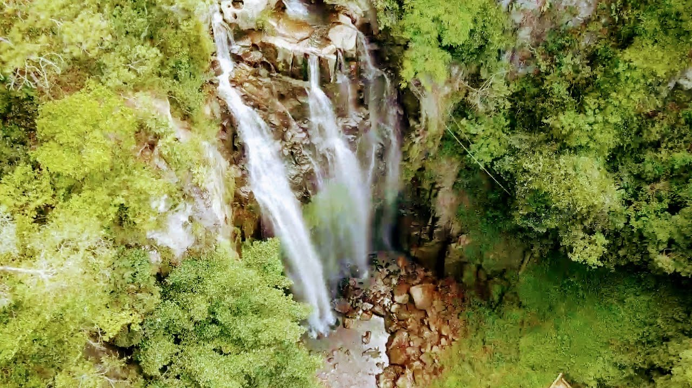
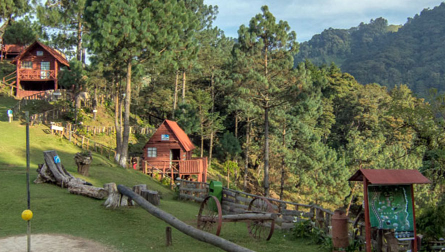
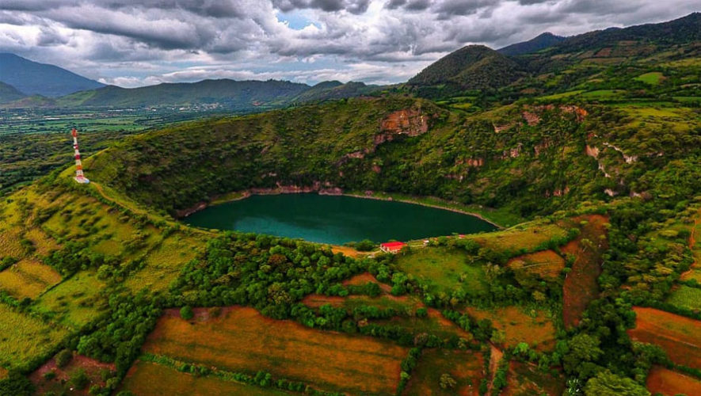
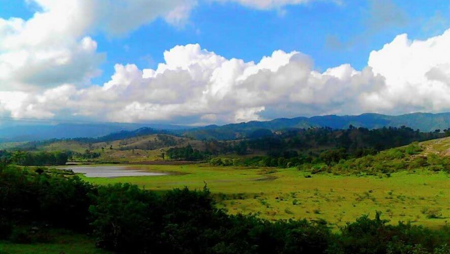
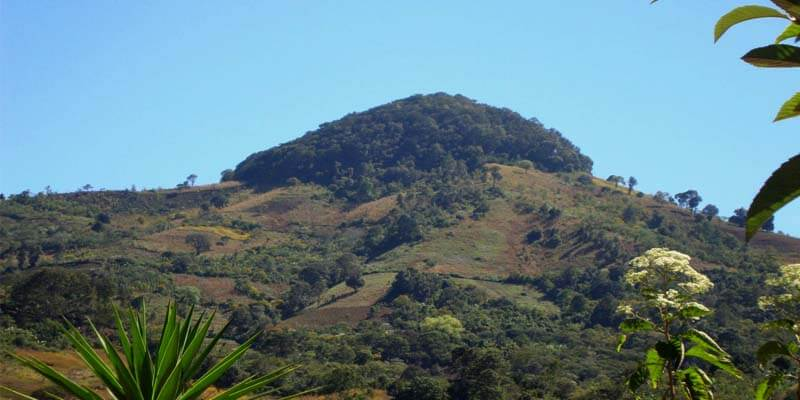

Es conocido como la "morena climatológica de Oriente" y cuenta con siete municipios, siendo la cabecera departamental la ciudad de Jalapa. El nombre del departamento se deriva del náhualt “Xal-a-pán”, que significa “Lugar en agua arenosa”. Durante el período hispánico fue conocido como Santa María Xalapán y Santa María Jalapa, se caracteriza por tener un clima generalmente templado, dependiendo de la región del departamento el clima puede llegar a ser seco o húmedo.
situado en la región Sur-Oriente de Guatemala. Limita al Norte con los departamentos de El Progreso y Zacapa; al Sur con los departamentos de Jutiapa y Santa Rosa; al Este con el departamento de Chiquimula; y al Oeste con el departamento de Guatemala.
1 / 5

Catarata Urlanta
Esta es una impresionante cascada de agua helada que mide aproximadamente 70 metros de altura. Este paraíso está rodeado de muchos árboles, rocas, distintas aves e incluso está cercano a un montículo en el que se puede observar con más claridad esta reserva natural.
2 / 5

Parque Ecológico Pino Dulce
Se encuentra en lo más alto de todo el oriente del país, disfrutarás de una vista impresionante desde los puentes colgantes. También puedes acampar y vivir una experiencia inolvidable.
3 / 5

Laguna el Hoyo
Esta es una laguna que aparece en medio de las montañas de Jalapa, es un espacio natural lleno de colores y con una vista increíble. Cuenta con un mirador en el que puedes apreciar la naturaleza de este municipio.
4 / 5

Laguna Los Achiotes
Cuenta con una vista muy linda y es un espacio relajante en donde puedes observar la naturaleza y los cultivos. El clima es muy agradable y las aguas son tranquilas, algo que lo convierte en un lugar turístico muy llamativo.
5 / 5

volcán Alzatate
El volcán Alzatate es un cono de escoria ubicado en el municipio de San Carlos Alzatate, departamento de Jalapa, Guatemala. Tiene una altura de 2.045 m s. n. m. El bosque que está en la cima del volcán es bastante cerrado, pero en algunas partes se puede gozar del paisaje.
❮
❯